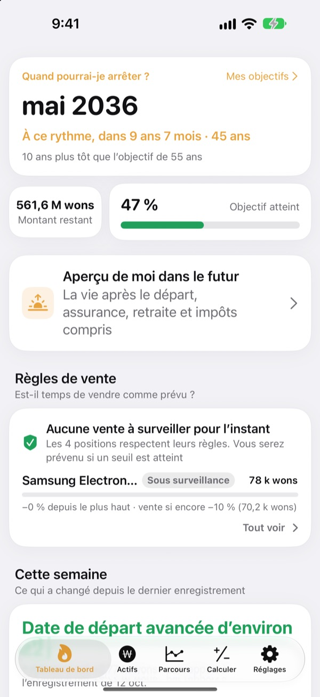
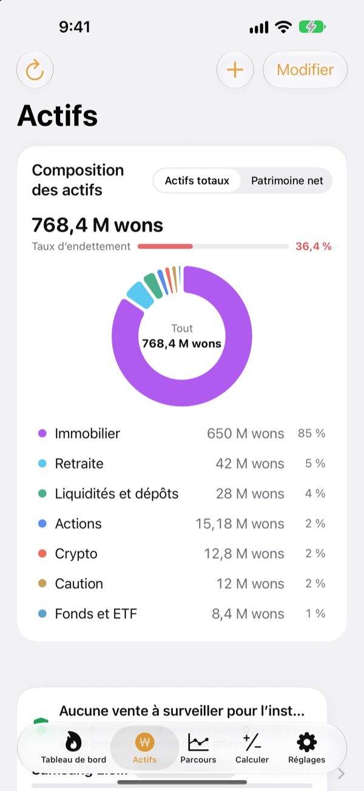
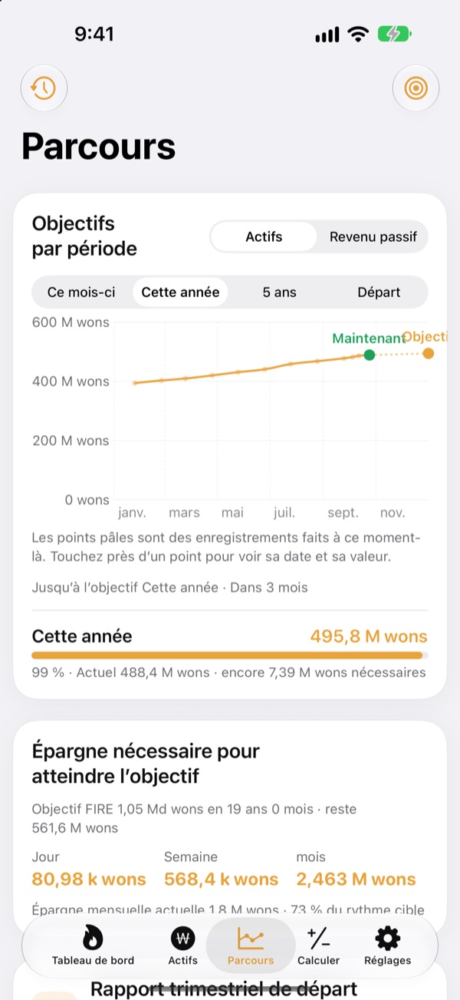
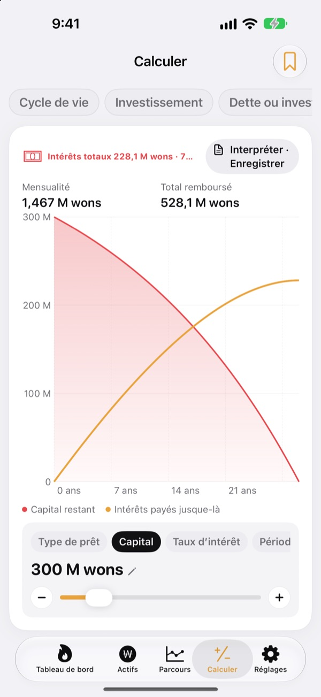

Quand pourrez-vous partir ?
La réponse en chiffres.
Indiquez vos dépenses et ce que vous avez mis de côté : vous obtenez le mois où vous pourriez tout arrêter. À chaque variation de votre patrimoine, vous voyez si cette date se rapproche ou s’éloigne.
Aucun compte requis. Vos données restent sur votre appareil.

Trouvez votre date de départ
Faites glisser les curseurs. C’est le même calcul que sur le premier écran de l’app.
Vous refaites encore de tête le calcul « est-ce que je peux partir ? »
Entre le compte courant, le compte-titres, l’épargne retraite et le dépôt de garantie, chacun de son côté, même votre total devient flou, et votre date de départ reste une intuition. Toesagak rassemble tout sur un seul écran et recalcule en continu, à partir de ce total, le mois où vous pourriez arrêter.
Tout votre patrimoine sur un écran
Immobilier, actions, fonds et ETF, retraite, liquidités et dépôts, cautions, cryptos et prêts, regroupés par type, avec votre patrimoine brut, votre patrimoine net et votre taux d’endettement.
Les cours des actions et des cryptos sont récupérés pour garder les valeurs à jour, et une capture d’écran de l’app de votre courtier importe positions et valeurs d’un coup.

Combien par jour pour y arriver
Ce mois-ci, cette année, cinq ans et la retraite comme objectifs, avec vos relevés passés, sur un seul graphique. L’app vous indique aussi combien épargner par jour, semaine ou mois pour rester sur la bonne voie.
Quand votre patrimoine change, le relevé de la semaine est enregistré automatiquement : votre historique se construit tout seul.

Faites le calcul avant de décider
Des calculateurs pour l’évolution de votre patrimoine sur la vie, l’investissement, rembourser une dette ou investir, les prêts, l’épargne et les dépôts, le pouvoir d’achat de votre salaire et la conversion de l’argent en heures. Faites glisser une valeur et le graphique se redessine, l’ancienne courbe restant en pointillés pour comparer.
Nommez et enregistrez les réglages que vous réutilisez.

Trois étapes pour commencer
- 1
Indiquez vos dépenses et votre âge
Des chiffres approximatifs suffisent. Votre date de départ s’affiche aussitôt.
- 2
Ajoutez votre patrimoine
Plus vous détaillez, plus la date est précise.
- 3
Revenez de temps en temps
Les relevés hebdomadaires s’accumulent tout seuls, et l’app peut vous faire signe le 1er de chaque mois.
Comment l’app calcule
- Objectif
- Une année de dépenses après le départ ÷ taux de retrait sûr (à 4 %, 25 années de dépenses)
- Date de départ
- Le mois où votre patrimoine net, plus votre épargne mensuelle, avec le rendement attendu, atteint l’objectif
- Patrimoine brut
- Tout ce que vous possédez, additionné
- Patrimoine net
- Patrimoine brut moins les dettes comme les prêts
- Avancement
- Patrimoine net ÷ objectif. Vous pouvez aussi le suivre en revenu passif
- Ce que vous pouvez modifier
- Dépenses mensuelles, taux de retrait de 2 à 6 %, rendement attendu de 0 à 12 %, l’âge auquel vous aimeriez partir
Tous les résultats sont des calculs indicatifs fondés sur vos saisies et ne constituent pas un conseil en investissement.
Questions
Où sont stockées mes données ?
Uniquement sur votre appareil. Pas d’inscription, et rien n’est envoyé au développeur. Activez la synchronisation iCloud dans Réglages pour retrouver les mêmes données sur votre iPhone et votre iPad via votre propre compte iCloud.
Les cours ne se mettent pas à jour.
Les actions américaines et coréennes, les cryptos et les taux de change fonctionnent sans configuration. Vérifiez votre connexion internet et l’exactitude du ticker ou du code de valeur. Les prix des appartements reposent sur les données immobilières publiques coréennes et nécessitent une clé de service gratuite à saisir dans Réglages.
Quelle différence entre patrimoine brut et patrimoine net ?
Le patrimoine brut est la somme de tout ce que vous possédez. Le patrimoine net, c’est ce total moins les dettes comme les prêts. Votre date de départ se calcule sur le patrimoine net.
Comment transférer mes données sur un nouvel appareil ?
Utilisez Exporter dans Réglages pour créer un fichier de sauvegarde, rangez-le dans Fichiers, iCloud Drive ou un e-mail, puis restaurez-le sur le nouvel appareil. Les sauvegardes n’incluent jamais de clés API. L’app conserve aussi automatiquement vos 20 sauvegardes les plus récentes sur l’appareil.
Comment fonctionnent les alertes de vente ?
Pour chaque position, fixez la baisse maximale depuis son plus haut ou un cours cible. Quand cette limite est franchie, vous êtes prévenu. À la hausse, l’app reste silencieuse. Les cours sont vérifiés à l’ouverture de l’app et quand iOS l’autorise en arrière-plan (en général toutes les quelques heures) : ce n’est donc pas une surveillance en temps réel.
Puis-je garder mes chiffres à l’abri des regards ?
Activez le verrouillage de l’app dans Réglages pour l’ouvrir avec Face ID ou votre code. Verrouillage activé, le rappel mensuel n’affiche plus aucun chiffre.
Puis-je d’abord faire un tour ?
Activez les données de démo dans Réglages pour parcourir tous les écrans avec le patrimoine d’une personne fictive. Désactivez-les et vos propres données reviennent aussitôt. Les données de démo ne sont pas disponibles quand la synchronisation iCloud est activée.
Comment supprimer toutes mes données ?
Supprimer l’app efface toutes les données enregistrées sur l’appareil. Pour en garder une copie, exportez d’abord un fichier de sauvegarde dans Réglages.
Puis-je investir en me fiant à ces chiffres ?
Les résultats de Toesagak sont des calculs indicatifs fondés sur vos saisies et un rendement supposé. Ce ne sont pas des conseils en investissement, et les résultats réels dépendent du marché et de votre situation.
Un bug, une idée, une question ? Écrivez à leeo@kakao.com.